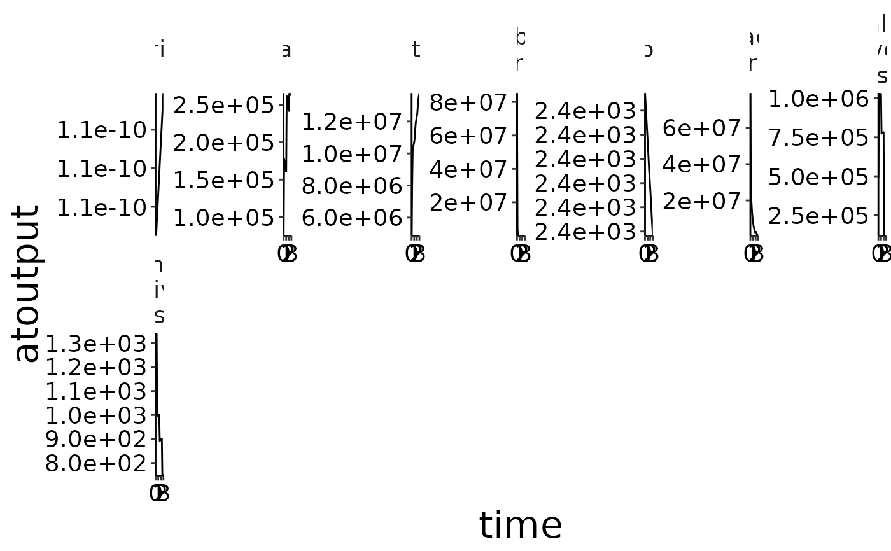
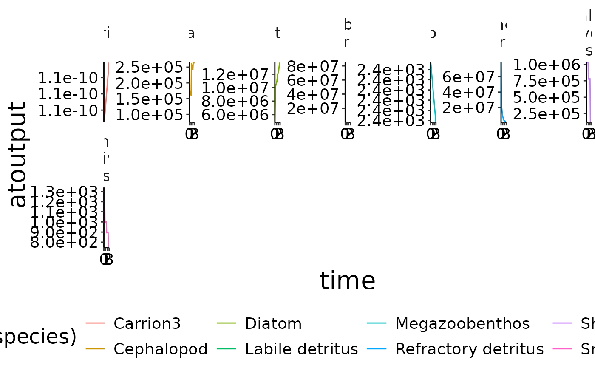
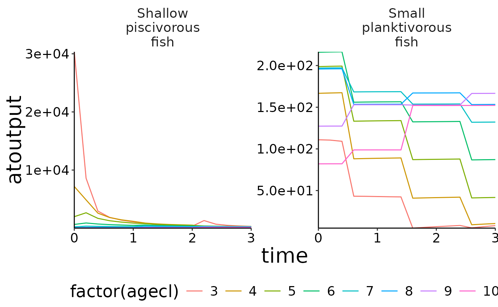
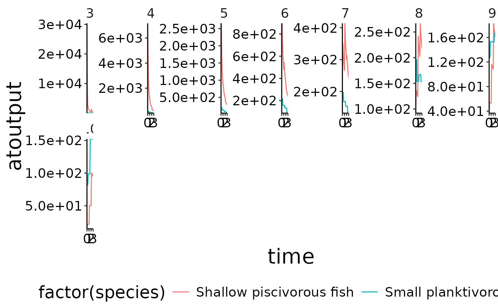
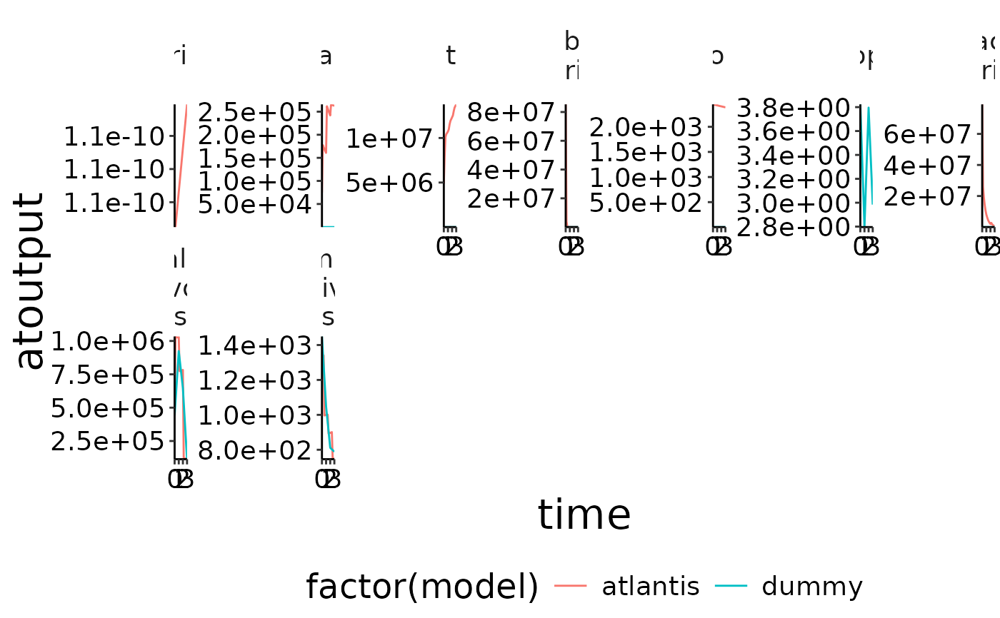

Function to plot time series of atlantis ncdf output.
Usage
plot_line(
data,
x = "time",
y = "atoutput",
wrap = "species",
col = NULL,
ncol = 7,
yexpand = FALSE,
ylim = NULL
)Arguments
- data
Dataframe to be plotted.
- x
x-variable. Default is
'time'.- y
y-variable. Default is
'atoutput'.- wrap
Wraping column. Default is
'species'- col
Column to use as colour. Default is
NULL.- ncol
Number of columns in multipanel plot. Default is
7.- yexpand
Expands the y axis so it always includes 0. Default is
FALSE.- ylim
Numeric vector. lower and upper limits of yaxis, eg c(0,1)
See also
Other plot functions:
plot_bar(),
plot_boxes(),
plot_diet(),
plot_diet_bec_dev(),
plot_rec(),
plot_species()
Examples
plot_line(preprocess$biomass)

plot_line(preprocess$biomass, col = "species")

plot_line(preprocess$biomass_age, col = "agecl")

plot_line(preprocess$biomass_age, wrap = "agecl", col = "species")

# The function can also be used to compare model outoput with observed data.
d <- system.file("extdata", "setas-model-new-becdev", package = "atlantistools")
ex_data <- read.csv(file.path(d, "setas-bench.csv"), stringsAsFactors = FALSE)
names(ex_data)[names(ex_data) == "biomass"] <- "atoutput"
data <- preprocess$biomass
data$model <- "atlantis"
comp <- rbind(ex_data, data, stringsAsFactors = FALSE)
# Show atlantis as first factor!
lev_ord <- c("atlantis", sort(unique(comp$model))[sort(unique(comp$model)) != "atlantis"])
comp$model <- factor(comp$model, levels = lev_ord)
# Create plot
plot_line(comp, col = "model")

if (FALSE) { # \dontrun{
# Use \code{\link{convert_relative_initial}} and \code{\link{plot_add_box}}
# with \code{\link{plot_line}}. Use \code{\link{convert_relative_initial}} to
# generate a relative time series first.
df <- convert_relative_initial(preprocess$structn_age)
# Create the base plot with \code{\link{plot_line}}.
plot <- plot_line(df, col = "agecl")
# Add lower and upper range.
plot_add_box(plot)
# Create spatial timeseries plots in conjuction with \code{\link{custom_grid}}.
plot <- plot_line(preprocess$physics, wrap = NULL)
custom_grid(plot, grid_x = "polygon", grid_y = "variable")
plot <- plot_line(preprocess$flux, wrap = NULL, col = "variable")
custom_grid(plot, grid_x = "polygon", grid_y = "layer")
} # }